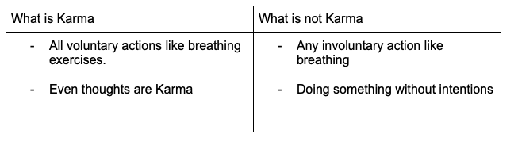

Karma
Posted on 12 June, 2021 in Simpler Life

“Man is the maker of his own destiny”
The structure that I will follow in this blog is:
- What is the real definition of Karma?
- What is bad or good Karma?
- Cycle of Karma
- Destiny
- Are we punished or rewarded based on our Karma?
- How to Detach from Karma
DEFINITION OF KARMA
Karma is when we think, do or speak. All voluntary actions are Karma. “Naa bura bolo, naa bura
socho, naa bura karo” which translates to “do not speak bad, do not think bad, do not do bad”
explains how Karma should be to a great extent. Karma is not just our actions but it starts at
the thought level. What we think or intend to do generates Karma. Any action backed by
motive/intention is Karma - good or bad is the next topic.
This image shows the sources of Karma:

To conclude this understanding below table can be referred. 
GOOD KARMA AND BAD KARMA
Since intentions are also counted as Karma these form the basis of type of Karma- good or bad. Any Karma done with good intentions even if the outcome is unfavourable or unexpected is counted as Good Karma. Example- If you try to save someone from fire in a building and you could not save the person, you did good Karma because you had good motives/intentions. Any Karma done with nasty intentions even if outcome was not achieved by the doer is Bad karma. Example- if a thief tries to break into someone’s house for stealing but couldn’t steal due to an alarm system or any other reason it is still bad Karma.
Karma with good intentions = Good Karma
Karma with bad intentions = Bad Karma
Hence thoughts decide our Karma, everything happens at the thought level. Your thoughts become actions.
CYCLE OF KARMA
Cycle of Karma is popularly known as what we give is what we receive back. Some of the famous
principles like - ‘treat others like you want yourself to be treated’, ‘law of attraction’, ‘do
good to others’, ‘Destiny is not a choice but our response to it is a choice’, are based on this
cycle. We attract what we think and do.
Your actions affect your near ones, then based on how they choose to act affect the next person
they come in contact with then the next person and so on.
“Do everything you have to do, but not with ego, not with lust, not with envy but with
love, compassion, humility, and devotion.” – Lord Krishna
Before proceeding I want you to understand Destiny since this is seen in relation with Karma.
DESTINY
Destiny are all those situations and conditions which are out of your own control and you cannot
change them. How’s destiny created - by Karmas. In short, cumulative Karma becomes destiny and
it is the result of all past karmas (you may or maynot remember) Examples of destiny can be -
someone born handicapped, someone born really beautiful, people with amazing dancing skills and
many others. In all such cases you cannot change what is already given but you have one powerful
thing - the way you respond to these . Someone born without legs can actually
become a paralympic
athlete, someone born with a unique voice can be a sensational singer or just be an ordinary
person - it is all how we respond . Destiny may be favourable
or unfavourable but how we respond to them changes everything and these responses form part of
Karma again. Our way of responses plays a greater role in karma or I can say thats’ the Karma.
Let’s see an example:
You come out in aggressive mode from the office meeting, instead of leaving that aggression there itself you carried it to home (nowadays most of us are working from home so just need to go to another room) and shouted at your wife. Now, she knows she is not at fault and has a choice of response- become angry or understand your state of mind, keep calm and discuss with you later.Whatever she chooses it has to come back and how you treated her will also come back. It can come immediately, in a week, in a year, in 10 years. There are theories which say that you even carry it to your next life, in case you carry it your next birth it is your destiny and from there again you have a choice of responses.
To summarize, it all boils down whether you respond positively or negatively, you take care of the situation or mess it up with your emotions, you respect others or disrespected them. Keep in mind, treat others the way you want others to treat you . This will save you from a lot of bad karma.
REWARD OR PUNISHMENT OF KARMA
This is a widespread myth that Karma is all about reward and punishment of your actions whereas the fact is that it is a ‘Cause and effect’ relationship. What we do is what we get back. If you tripped over your shoes (effect) it can be because last night you left them in the middle of the room (cause). It has nothing to do with others, it is your Karma. Everyone wishes for favourable effects for that they need to create favourable causes. Every human on this planet is connected, we all are unified, we all are one. So how you act, think or speak affects someone else and how they react affect the next person and thus it becomes a very complex cycle sometimes to come back to you that’s when we start wondering why is this happening to me. That is the reason you must believe that you are the reason for your state, condition, happiness, sadness etc. You must own your karma and create the part of your destiny which is not given to you.
HOW TO DETACH YOURSELF FROM KARMA
To enjoy life in real sense, try to keep yourself away from the expectations of outcome of any action. Detachment does not mean to leave everything and go away but it means being in this world , living life without any expectations. This is not easy. What we have been doing so far is for some or the other expected outcome and that way of life has made us happy (when expectations are met) and sad (when expectations are not met) So why not to try a different way to live. Live without expectations, without attachments. Do things purely out of love. Do not attach yourself with the results. Do your part and leave the rest. Like lord Krishna said in Mahabharat, “Karm karo phal ki chinta mat karo” (you have right to work but never to the fruit of work).
Hope all this made some sense to you! Drop a comment here or DM me on instagram
Keep smiling .
About me